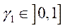

ESTRUCTURA
DE ENTRADA DE DATOS DEL PROGRAMA PLCd
Junio
2016
Versin
del cdigo: 16.01
S. Oller, B. Luccioni, A. Hanganu,
E. Car, O. Salomon, L. Neamtu,
F. Zalamea, P. Mata,
X. Martnez, M. Molina, J.A. Paredes, C. Escudero,
F. Bellomo, F. Otero, E. Comellas,
L. Barbu y S. Zaghi.
INTRODUCCIN:
PLCd es un programa
desarrollado en el Departamento de
Resistencia de Materiales y Estructuras en la Ingeniera de la Universidad Politcnica de Catalua.
Este cdigo permite trabajar con problemas de la mecnica de slidos lineal, no
lineal, con pequeas o grandes deformaciones y anlisis trmicos y
termo-mecnicos acoplados.
A continuacin
se presentan de manera introductoria algunas de las caractersticas del cdigo.
Se trata de un cdigo de elementos finitos desarrollado ntegramente en FORTRAN
existiendo en la actualidad una versin serie y una versin paralela. La
versin paralela se basa en las libreras de paralelizacin de Silicon Graphics.
En la resolucin de
problemas de la mecnica de slidos permite realizar anlisis cuasi estticos y dinmicos, ssmicos o no, con no
linealidad constitutiva y geomtrica.
El cdigo permite
realizar anlisis con materiales que presenten fenmenos de viscoelasticidad,
dao y plasticidad generalizada no asociada con endurecimiento istropo
positivo, nulo o negativo.
El tensor constitutivo
es posible considerarlo constante en la configuracin material o en la
actualizada. Tambin trabaja con endurecimiento cinemtico para plasticidad de Von Mises. Utiliza seis funciones de fluencia:
. Tresca,
. Von Mises,
. Mohr-Coulomb
y Mohr-Coulomb generalizada (Oller),
. Drucker
Prager circunscrita,
. Lubliner-Oller,
. Dao norma de tensiones principales.
Trabaja con
anisotropa general y considera el tratamiento de una gran variedad de
materiales compuestos, incluido el hormign armado. Permite el tratamiento de
materiales compuestos utilizando la Teora
de Mezclas Generalizada de Substancias Bsicas.
Puede tratar problemas
de tensin plana, deformacin plana,
axil simetra, estructuras aporticadas, estructuras
articuladas y slidos tridimensionales y tambin mezclar distintos tipos
de elementos finitos.
Utiliza elementos
finitos tetradricos de cuatro y diez nodos, hexadricos de ocho y veinte
nodos, triangulares de tres y seis nodos, elementos cuadrilteros de cuatro,
ocho y nueve nodos, elementos finitos uniaxiales de Timoshenko
con dos y tres nodos, elementos uniaxiales de barras articuladas con dos y tres
nodos y elementos de transicin entre elementos de elasticidad plana y
elementos de barra. Tambin puede usar elementos hbridos tetradricos (de
cuatro y diez nodos) y hexadricos (de ocho y veinte nodos), por ahora con un
solo punto de presin. Los elementos uniaxiales pueden tratarse por capas,
donde cada una de ellas puede ser de un material distinto, simple o compuesto.
Estos elementos son resueltos con modelos constitutivos 3-D y la integracin
por capa se hace mediante una aproximacin polinmica segmentaria.
La solucin del sistema de ecuaciones puede realizarse con los
siguientes mtodos:
. Mtodo Frontal,
. Descomposicin LU,
. Descomposicin LDLT,
. Descomposicin de Cholesky,
. Mtodo iterativo GMRES
. Mtodo PARDISO
La solucin del problema dinmico se realiza por el mtodo de Newmark. En el anlisis de problemas
transitorios trmicos es posible la utilizacin del mtodo de Euler implcito as
como del mtodo de Newmark.
Entre sus principales ventajas se encuentra la portabilidad que le
da su estructura de bases de datos, adaptndose automticamente a mquinas
pequeas o mquinas grandes y bajo sistemas operativos DOS, Windows 95 VMS y
UNIX (P.C., SUN, Silicon Graphics, Convex, Vax, etc.). Posee salidas
para distintos post-procesadores comerciales (Femview, Flavia c_Cimne y GiDc_Cimne [Una copia de prueba puede obtenerse
en: http://gid.cimne.upc.es] ).
Este programa est en desarrollo (2016),
y ha ganado el primer premio Argentino otorgado por IBM, en el rea de Ciencias
Exactas, Ingeniera, Fsica, Astronoma y Matemticas, por su aplicacin a la
Simulacin Numrica del Comportamiento de Estructuras de Materiales
Friccionales y su portabilidad - Buenos Aires
Sep./1993. (Luccioni-Oller).
NOTA: Este manual se ajusta a la
versin del programa para elementos bidimensionales y tridimensionales. La
entrada de datos para los elementos viga puede sufrir variaciones respecto lo
que se expone en el presente documento.
CONTENIDOS:
|
1. |
Archivo
de entrada de datos .DTS |
(pg |
3) |
|
2. |
Archivo
de entrada de datos .DIN |
(pg |
33) |
|
3. |
Archivo
de entrada de datos .ARC |
(pg |
36) |
|
4. |
Archivo
de entrada de datos .ELM |
(pg |
|
|
5. |
Archivo
de entrada de datos .MAT |
(pg |
38) |
|
|
|
|
|
|
A.I |
Parmetros
definicin curvas uniaxiales |
(pg |
39) |
|
A.II |
ngulos
de Euler |
(pg |
41) |
|
A.III |
Tipos
de elementos y su numeracin local |
(pg |
42) |
|
A.IV |
Curvas
de endurecimiento para modelos plsticos y de dao |
(pg |
47) |
|
A.V |
Curvas
de evolucin de la friccin y la dilatancia interna. |
(pg |
51) |
|
A.VI |
Criterios
de fluencia |
(pg |
52) |
1.
ARCHIVO DE ENTRADA DE DATOS .DTS
LECTURA DE DATOS EN
FORMATO LIBRE.
En
este archivo se carga la mayora de los datos a excepcin de las
caractersticas de la carga dinmica
Cada
subgrupo (definido con el smbolo ) supone una nueva
lnea de comandos en el archivo de entrada de datos.
Cada
elemento del subgrupo (definido con el smbolo ) supone un valor
alfa-numrico a introducir en la lnea del subgrupo.
Los
elementos definidos con el smbolo 4 indican
posibles entradas de los valores alfa-numricos.
GRUPO 1: DATOS INICIALES DEL PROBLEMA
SubGrp 1-a: Solo para VAX
NOMBRE : Nombre con
que se quieren denominar a los archivos de resultado. (debe estar en minsculas
y con la RAIZ .dts - ej.: pepe.dts ) (Slo para Vax.)
SubGrp 1-b: Versin de entrada de datos
PROBLEMA A RESOLVER : Cdigo del problema a resolver:
4
MEC2D : Resolucin de
un problema mecnico bidimensional
4
MEC3D : Resolucin de
un problema mecnico tridimensional
4
ACOP2D : Resolucin
problema trmico-mecnico 2D (no
validado)
4
ACOP3D : Resolucin
problema trmico-mecnico 3D (no
validado)
4
VIGAS2D : Resolucin
problema 2D mediante teora de vigas
4
VIGAS3D : Resolucin problema 3D mediante
teora de vigas
SubGrp 1-c: Estrategia de solucin
KINDP : Cdigo
de estrategia de solucin:
4
kindp =1 :
Resolucin independiente del camino
4
kindp =2 :
Resolucin dependiente del camino
SubGrp 1-d:
Parmetros resolucin
LARGE : Cdigo
de grandes deformaciones:
4
large =0 :
Resolucin con pequeas deformaciones
4
large =1 :
Resolucin con grandes deformaciones
NCONST : Ya no
se usa. Poner 1.
NLAG : Cdigo
de grandes deformaciones:
4
nlag =1 : Total Lagrangean
4
nlag =2 : Updated Lagrangean
4
nlag =3 : Updated Lagrangean formulado en
la configuracin material (Slo para Von Mises!)
SubGrp
1-e: Tipo de sistema a resolver (Ver Anexo VII)
ISIME : Solver Pardiso (ISOLVER = 6)
nicamente
4
isime =0 : Solver simtrico
4
isime =1 : Solver asimtrico
SubGrp
1-f: Indicador
Indicador para restart
4
START0 : Inicia por
primera vez la corrida y NO genera archivo para restart.
4
START1 : Inicia por
primera vez la corrida y genera archivo para restart.
4
START2 : Reinicia una
corrida (ReSTART), solo para ISOLVER = 6.
NOTAS
para START2:
1)
Para adicionar un(os) nuevo(s) caso(s) de carga, se cambia NCARG al requerido, luego
despus de la ltima lnea del archivo ***.dts, se adiciona la informacin correspondiente
acorde con lo planteado desde el grupo 7
hasta el grupo 19.
2)
En caso de que solo se requiera cambiar las condiciones de
alguna(s) lnea(s) correspondiente(s) al control incremental de cargas (grupo
19), es necesario hacer el arreglo de la(s) lnea(s) luego de la lnea de
ubicacin del ltimo paso convergido.
SubGrp
1-g: Ttulo del problema
TTULO limitado a 72 caracteres
SubGrp 1-h: DATOS DE CONTROL (un registro)
NPOIN : Nmero total de Puntos Nodales del problema,
NELEM : Nmero total de Elementos en la discretizacin,
NMATC : Nmero de Materiales Compuestos a utilizar,
MAXLAY: Mximo nmero de capas que puede tener un material
compuesto
NMATS : Nmero de Materiales Simples a utilizar,
NFASE: Nmero de fases de construccin a considerar (las fases de
construccin permiten tener activo o inactivo un elemento durante un caso de
carga)
NINCM : Nmero Mximo de Incrementos de Carga
NMICRO : Nmero de Materiales Simples Micro
dentro de NMATS a utilizar.
NOTA: Si no se va a
usar un micro-modelo poner 0.
ISOLVER : Tipo
de Solver a utilizar:
4
isolver =1 : Mtodo
frontal
4
isolver =2 : Mtodo
de descomposicin LU
4 isolver =3 : Mtodo
iterativo GMRES (necesita validacin)
4 isolver =4 : Mtodo
de descomposicin de CHOLESKY matrices simtricas y definidas positivas. No
utilizar en problemas con softening)
4 isolver =5 : Mtodo
de descomposicin LDLT (matrices simtricas)
4 isolver =6 : Mtodo PARDISO (direct
sparse solver)
KRENU : Indicador
de renumeracin de ancho de banda:
4
krenu =0 : No
renumera
4
krenu =1 : Renumera
optimizando el ancho de banda
4
krenu =2 : Renumera
optimizando profile (para ser utilizado en
almacenamiento skyline)
NOTA: Si ISOLVER=6,
usar krenu=0.
PRINT :
Indicador de impresin de resultados:
4
print = 0 : Archivo
de post proceso binario (*.post.res) y archivo de salida (*.mec.sal)
reducido
4
print = 1 : Archivo
de post proceso binario (*.post.res) y archivo de salida (*.mec.sal)
extendido
4
print = 2 : Archivo
de post proceso ascii (*.post.res, *.post.msh) y archivo de salida (*.mec.sal)
extendido
ICOUP : Indicador de
problemas acoplados:
4
icoup =1 :
Problemas desacoplado y funcin de NTYPE
4 icoup =2 :
Problemas acoplados
INFATIGA :
Indicador de clculo de fatiga
4
INFATIGA =0 : No se toma en cuenta la fatiga.
4 INFATIGA =1 :
Se alocaran en las bases de datos las variables necesarias para el clculo de
fatiga y se activa el algoritmo de fatiga en el cdigo.
NOTA: Asegurarse que est implementado
en la versin que se est usando del PLCd. Por ahora,
slo es compatible con el dao de Kachanov (NTINT=4).
IFRECUECIA :
Parmetro para definir si se escriben los ficheros para el clculo de los modos
de vibracin y sus respectivas frecuencias.
4
IFRECUECIA =0: No escribe los ficheros.
4
IFRECUECIA =1: Escribe los ficheros.
INDAM :
Parmetro para indicar si hay dao inicial en alguno de los elementos.
4
INDAM=0: No hay dao inicial
4 INDAM=1: Hay
dao inicial, se debe indicar el valor en la definicin de cada elemento.
NOTA: Por ahora, slo es compatible con
el dao explcito (NTINT=4, 25, 26 y 28).
SubGrp 1-i: DATOS
COMPLEMENTARIOS SOLVER ITERATIVO (un registro. Slo si solver
es iterativo, si no obviar este grupo)
NKRYLO : Nmero de Krylov,
NITER : Mximo nmero de iteraciones,
GMTOL : Tolerancia,
IPRINT
4
iprint = 0 no imprime,
4
iprint = 1 imprime.
GRUPO 2: DEFINICIN DE ELEMENTOS
SubGrp 2-a: INCIDENCIAS ELEMENTALES (un registro por cada elemento. Total de
registros = NELEM.)
NUMEL : Nmero de elemento,
MATNO (1) :
Nmero de material asignado al elemento (siempre es un material compuesto).
MATNO (2) : Tipo de
elemento:
4 matno = 0 : Elemento tipo junta,
4 matno = 2 : Elemento normal.
FRACL : Longitud de
fractura:
4 fracl = 0 : Calcula automticamente,
4 fracl = valor :
Valor de la longitud que se asigna al elemento (nmero real).
NTYPE : Tipo de problema:
4 ntype = 1 : Barra Timoshenko,
4 ntype = 2 : Barra
biarticulada,
4 ntype = 3 : Tensin
Plana,
4 ntype = 4 :
Deformacin Plana,
4 ntype = 5 : Axilsimetra,
4 ntype = 6 :
Elemento volumtrico,
4
ntype = 7 :
Elemento de Lamina Triangular DKT-CST.
4
ntype = 8 :
Elemento volumtrico hbrido Desplazamiento-Presin (U-P).
FASE: Fase de
carga a la que pertenece el elemento
NNODE : Nmero de Nodos
del elemento:
4 nnode =2 : Unidimensional lineal,
4
nnode =3 :
Unidimensional cuadrtico,
4
nnode =3 :
Bidimensional lineal,
4 nnode =4 : Bidimensional lineal o tridimensional lineal (tetraedro),
4
nnode =6 :
Bidimensional cuadrtico,
4
nnode =8 :
Bidimensional cuadrtico o tridimensional lineal (hexaedro),
4
nnode =9 :
Bidimensional cuadrtico,
4
nnode =10 :
Tridimensional cuadrtico (tetraedro),
4
nnode =20 :
Tridimensional cuadrtico (hexaedro).
NOTA: Ver anexo III para ms detalle sobre los tipos de elemento y su numeracin local.
NGAUS : Nmero
de Puntos de Integracin a utilizar: 1, 2, 3, 4, 5 o 6. (Para elementos
triangulares, el nmero total de puntos es: 1 y 3. Para elementos tetradricos
el nmero total de puntos es 1 o 2. Para elementos hexadricos el nmero total
de puntos es 2 o 3.)
NINTE :
Cuadratura de integracin:
4
ninte =1 : Gauss,
4
ninte =2 : Lobato,
4
ninte =3 : Newton,
4
ninte =4 : Cowper
para elementos triangulares,
4 ninte =5 : Radau para elementos triangulares.
LNODS (1) : Nmero del 1r nodo elemental,
LNODS (2) : Nmero del 2 nodo elemental,
....
LNODS (N) :
Nmero del N-simo nodo elemental, donde N es el
valor NNODE escogido.
NGULOS DE
EULER DEL ELEMENTO (3-1-3) (Ver dibujo al final)
EAEULER
(NUMEL, 1) = : ngulo de Euler que hay
entre los ejes locales y globales, en grados.
EAEULER
(NUMEL, 2) = : ngulo de Euler que
hay entre los ejes locales y globales, en grados. (Slo para NTYPE=6, caso 3D)
EAEULER
(NUMEL, 3) = : ngulo de Euler que
hay entre los ejes locales y globales, en grados. (Slo para NTYPE=6, caso 3D)
NOTAS:
1)
El orden de numeracin local es anti-horario para los elementos finitos planos, y de
izquierda a derecha o de abajo hacia arriba para los elementos finitos
unidimensionales.
2)
Para los elementos con menos de nueve nodos no
se deben rellenar con ceros las restantes posiciones.
GRUPO 3: DEFINICIN DE MATERIALES COMPUESTOS. Este grupo consta de tres subgrupos. Se debe llenar el Grupo 3 para
cada material compuesto. El primer subgrupo se escribe slo una vez por cada
material compuesto, mientras que los dos ltimos subgrupos (3-b + 3-c) se
escriben tantas veces como layers formen el material
compuesto.
SubGrp 3-a: DATOS GENERAL DEL COMPUESTO
NMATC : Nmero
del compuesto ( MATNO(1) ),
NULAY (NMATC)
: Nmero de layers del compuesto.
SubGrp 3-b: DEFINICIN DE LAS LAYERS SEGN SU TEORA
TYLAY (NMATC,
NULAY) : Teora de la layer a utilizar,
4
P : Teora de mezclas clsica (comportamiento
en paralelo),
4
SP : Teora de mezclas Serie/Paralelo,
4 NT : Teora de Nanotubes,
TVLAY(NMATC,
NULAY) : Participacin volumtrica de la layer en el
compuesto,
NGULOS DE
EULER DEL LAYER (3-1-3) (Ver dibujo al final),
LAEULER
(NMATC, NULAY, 1) = : ngulo de Euler que
hay entre el sistema del layer y el sistema del
compuesto, en grados (el sistema del compuesto coincide con el del elemento).
LAEULER
(NMATC, NULAY, 2) = : ngulo de Euler que
hay entre el sistema del layer y el sistema del
compuesto, en grados. (Slo para
NTYPE=6, caso 3D)
LAEULER
(NMATC, NULAY, 3) = : ngulo de Euler que
hay entre el sistema del layer y el sistema del compuesto,
en grados. (Slo para NTYPE=6, caso 3D)
SubGrp 3-c: DEFINICIN DE LAS LAYERS SEGN SUS MATERIALES SIMPLES
Para teora P:
NUCOM (NMATC,
NULAY) : Nmero de materiales simples forman la layer,
LCPRO(NMATC,
NULAY, 1) : Nmero del material simple correspondiente al primer componente,
PARTV(NMATC,
NULAY, 1) : Participacin volumtrica del primer componente en la layer,
....
LCPRO (NMATC, NULAY,
NUCOM) : Nmero del mat. simple corresp.
al NUCOM componente,
PARTV (NMATC,
NULAY, NUCOM) : Participacin volumtrica del NUCOM componente.
Para teora
SP:
NOTA: La composicin en paralelo se hace en la direccin 1 (xx) de la layer.
LCPRO (NMATC, NULAY,
1) : Nm. del material simple correspondiente a la FIBRA en la layer,
PARTV (NMATC,
NULAY, 1) : Participacin volumtrica de la FIBRA en la layer,
LCPRO (NMATC,
NULAY, 2) : Nm. del mat. simple correspondiente a la
MATRIZ en la layer,
PARTV (NMATC, NULAY,
2) : Participacin volumtrica de la MATRIZ en la layer,
Datos serie/paralelo. PS=1: paralelo, PS=0:
serie (Si se ponen los 6 PS=1 se tiene la teora de mezclas clsica) (Solo para
NTYPE=6, caso 3D).
PS (NMATC,
NULAY, 1): PSx
PS (NMATC,
NULAY, 2): PSy
PS (NMATC,
NULAY, 3): PSxy
PS (NMATC,
NULAY, 4): PSz
PS (NMATC,
NULAY, 5): PSxz
PS
(NMATC, NULAY, 6): PSyz
Fibuck (NMATC,
NULAY, 1) : Radio de la fibra (solo 2D
problema pandeo fibra)
Fibuck (NMATC, NULAY,
2) : Amplitud de las desalineaciones iniciales (solo 2D pandeo fibr.)
Fibuck (NMATC,
NULAY, 3) : Periodo de las desalineaciones iniciales (solo 2D pandeo fibr.)
Fibuck (NMATC,
NULAY, 4) : % matriz daada por desalineacin fibra (solo 2D pandeo fibr.)
Fibuck (NMATC,
NULAY, 5): Longitud de fractura de matriz afectada (solo 2D pandeo fibr.)
Para teora
NT:
LCPRO (NMATC, NULAY,
1) : Nmero del material simple correspondiente a la MATRIZ en la layer,
PARTV (NMATC,
NULAY, 1) : Participacin volumtrica de la MATRIZ en la layer,
LCPRO (NMATC,
NULAY, 2) : Nmero del material simple correspondiente al NANOTUBE en la layer,
PARTV (NMATC,
NULAY, 2) : Participacin volumtrica del NANOTUBE en la layer,
LCPRO (NMATC,
NULAY, 3) : Nmero del material simple correspondiente a la ZONA DE INTERFACE
en la layer,
PARTV (NMATC,
NULAY, 3) : Participacin volumtrica de la ZONA DE INTERFACE en la layer.
dnt (dimetro
promedio nanotubos),
Lnt (longitud
promedio nanotubos),
h (parmetro distribucin nanotubos, =1 perfectamente alineado).
GRUPO 4: DEFINICIN COORDENADAS NODALES
SubGrp 4-a: COORDENADAS
NODALES (un registro por cada nodo. Total de registros =NPOIN.)
IPOIN : Nmero
del punto nodal
COORD (1) : Coordenada x (o r),
COORD (2) :
Coordenada y (o z).
COORD (3) :
Coordenada z (slo para NTYPE=6,7)
NOTAS:
1)
El nmero total de puntos nodales de este
GRUPO puede diferir de NPOIN especificado en el GRUPO 3, debido a que en los
elementos planos de ocho y nueve nodos slo es imprescindible dar las
coordenadas de los nodos de esquina, las coordenadas de los restantes se
calculan automticamente.
2)
Para los elementos Lagrangeanos
de nueve nodos, nunca se debe dar las coordenadas del nodo central.
3)
Se debe incluir siempre la coordenada del nodo
ms alto sea o no un nodo central de un elemento de nueve nodos.
GRUPO 5: DEFINICIN DE MATERIALES SIMPLES (un registro por cada material
NMATS).
SubGrp
5-a:
Nombre del material simple para
identificarlo en el post proceso. Son
admisibles 5 palabras como mximo. Si no se introduce nada o solo un comentario
(para introducir comentario anteponer !) el nombre del material se define con
el nmero NUMAT.
SubGrp
5-b:
NUMAT : Nmero
identificador del material.
SubGrp 5-c:
NCRIT (NUMAT)
: Nmero de criterio de fluencia a utilizar:
4
ncrit =1 : Tresca,
4
ncrit =2 : Von Mises,
4
ncrit =3 :
Mohr-Coulomb y Mohr-Coulomb generalizado (Oller),
4
ncrit =4 : Drucker Prager circunscrita,
4
ncrit =5 : Lubliner-Oller,
4
ncrit =6 : Dao
norma de tensiones principales,
4
ncrit =7 : Dao de Simo & Ju.
NOTA: Dao norma de tensiones principales y Dao Simo & Ju slo estn disponibles para Dao de Kachanov (NTINT=4) y Dao explcito con Neo-Hooke
compresible (NTINT=24).
NCRIP (NUMAT)
: Nmero de criterio de potencial a utilizar:
4
ncrip =1 : Tresca,
4
ncrip =2 : Von Mises,
4
ncrip =3 :
Mohr-Coulomb y Mohr-Coulomb generalizado (Oller),
4
ncrip =4 : Drucker Prager circunscrita,
4
ncrip =5 : Lubliner-Oller,
4
ncrip =6 : Fibras
(obligado para fibras).
NTINT (NUMAT)
: Tipo de algoritmo para integrar la ecuacin constitutiva:
4
ntint =0 :
Elstico,
4
ntint =1 : Euler Backward (plasticidad),
4
ntint =2 :
Hinton-Owen (plasticidad),
4
ntint =3 : Lubliner (plasticidad),
4
ntint =4 : Dao de Kachanov (dao escalar generalizado explcito),
4
ntint =5 : Dao
Generalizado (dao escalar generalizado implcito),
4
ntint =6 : Modelo
Viscoelstico de Simo,
4
ntint =7 : Modelo
Viscoelstico simple, slo funciona con problemas dinmicos,
4
ntint =8 : Euler Backward con matriz consistente para Von-Mises
(E.Car),
4
ntint =9 : Euler Backward corregido por Crisfeld (E.Car),
4
ntint =10: Euler Backward con matriz algortmica numrica para cualquier
superficie de fluencia (E.Car).
4
ntint =11: Modelo
de dao y viscosidad,
4
ntint =12: Dao
implcito acoplado con plasticidad para cargas montonas.(B. Luc.)(solo en 3D).
NOTA:
Los parmetros de
input para el modelo de dao estn contemplados en el apartado Propiedades de
Material VII
4
ntint =13: Dao
implcito acoplado con plasticidad para cargas cclicas (solo en 3D).
NOTA:
Se ha de usar la curva
de endurecimiento nmero 7. La carga se ha de definir de la misma manera que
para un anlisis de fatiga (INFATIGA =1 e IDINA=1) desde el archivo .din.
4
ntint =14: Modelo
Deslizamiento de fibra (debounding),
4
ntint =15: Modelo
de usuario
4
ntint =16: Modelo
hiperelstico tipo Neo-Hooke con deformacin isocrica y volumtrica separadas.
Formulado para Total Lagrangean y para Updated Lagrangean.
NOTAS:
1)
Requiere la
estimacin de la presin obtenida con un elemento hbrido NTYPE=8.
2)
La introduccin
de las propiedades materiales se hace en el archivo .mat.
4
ntint =17: Modelo
hiperelstico tipo Ogden con deformacin isocrica y volumtrica separadas.
Formulado para Total Lagrangean y para Updated Lagrangean.
NOTAS:
1)
Requiere la
estimacin de la presin obtenida con un elemento hbrido NTYPE=8.
2)
La
introduccin de las propiedades materiales se hace en el archivo .mat.
4
ntint =18: Modelo
Dao con criterio independiente traccin-compresin (J. A. Paredes) (slo en
3D).
4
ntint =19: Modelo
Dao con criterio independiente traccin-compresin (R. Faria) (slo en 3D).
4
ntint =20: Micro
Modelo Mtodo de los promedios (Usar si NMICRO ≠ 0, Ver ANEXO VIII).
4
ntint =21: Micro
Modelo Expansin asinttica (Usar si NMICRO ≠ 0). Modelo de
dao para matriz afectada por pandeo de fibras (slo en 2D).
4
ntint =22: Modelo
istropo compresible hiperelstico tipo Neo-Hooke de Bonet (slo en 3D).
Formulado para Total Lagrangean y para Updated Lagrangean.
4
ntint =23: Modelo
istropo compresible hiperelstico tipo Ogden (slo en 3D). Formulado para
Total Lagrangean y para Updated
Lagrangean.
NOTA:
La introduccin de las
propiedades materiales se hace en el archivo .mat.
4
ntint =24: Modelo
istropo compresible hiperelstico tipo Neo-Hooke de Bonet con dao escalar
explcito tipo Kachanov (ntint=22
+ ntint=4).
NOTA:
Slo permite NCRIT=2 y
NCRIT=7.
Para NCRIT=7, se debe tomar
necesariamente una curva de dao exponencial de Balzani.
4
ntint =25: Modelo
istropo quasi-incompresible hiperelstico tipo
Neo-Hooke con dao escalar explcito tipo Kachanov (ntint=16 + ntint=4).
NOTA:
Slo permite NCRIT=2 y
NCRIT=7.
Para NCRIT=7, se debe tomar
necesariamente una curva de dao exponencial de Balzani.
NOTAS:
1)
Requiere la estimacin
de la presin obtenida con un elemento hbrido NTYPE=8.
2)
La
introduccin de las propiedades materiales se hace en el archivo .mat.
4
ntint =26: Modelo
istropo quasi-incompresible hiperelstico tipo Ogden
con dao escalar explcito tipo Kachanov (ntint=17 + ntint=4).
NOTA:
Slo permite NCRIT=2 y
NCRIT=7.
Para NCRIT=7, se debe tomar
necesariamente una curva de dao exponencial de Balzani.
NOTAS:
1)
Requiere la
estimacin de la presin obtenida con un elemento hbrido NTYPE=8.
2)
La
introduccin de las propiedades materiales se hace en el archivo .mat.
4
ntint =27: Modelo
de crecimiento istropo inducido por tensiones y considerando disponibilidad
biolgica (F. Bellomo).
NOTAS:
1)
Requiere la estimacin
de la presin obtenida con un elemento hbrido NTYPE=8.
2)
La
introduccin de las propiedades materiales se hace en el archivo .mat.
3)
De momento,
slo implementado para hiperelasticidad de Ogden.
4 ntint =28: Modelo de sanado (healing), homeostatic turnover remodelling (E.Comellas).
NOTAS:
1)
Requiere la
estimacin de la presin obtenida con un elemento hbrido NTYPE=8.
2)
La
introduccin de las propiedades materiales se hace en el archivo .mat.
3) De momento, slo implementado para hiperelasticidad de Ogden.
NFLUG (NUMAT)
: Tipo de flujo plstico para integrar la ecuacin constitutiva:
4
nflug =1 :
constante,
4
nflug =2 :
variable.
Si ntint =20 (Micro
Modelo):
4 nflug =1 : Firts Order Homogenization Theory,
4 nflug =2 : Second
Order Homogenization Theory.
NHARD (NUMAT):
Tipo de variable de endurecimiento en caso de utilizar plasticidad:
4
nhard =1 :  , variable energtica normalizada;
, variable energtica normalizada;
4
nhard =2 : , variable de deformacin efectiva con limites ltimos
diferenciados a traccin y compresin.
4
nhard =3 : , variable de deformacin efectiva clsica - Supone curvas de
comportamiento unidimensional iguales a traccin y compresin.
4 nhard=4 :  , variable energtica normalizada modificada (Luccioni 2003)
(Funciona bien en comprensin triaxial de Ho); Solo funciona en 3D. No est
activo.
, variable energtica normalizada modificada (Luccioni 2003)
(Funciona bien en comprensin triaxial de Ho); Solo funciona en 3D. No est
activo.
Si ntint =20 (Micro
Modelo):
4
nhard =1 : Linear Boundary Condition
4
nhard =2 : Periodic Boundary Condition
NMATX (NUMAT) : Tipo de matriz tangente:
4 nmatx =1 : Contnua
4 nmatx =2 :
Para NTINT=8, 9 y 10: matriz tangente algortmica.
Para NTINT=4 y 24: matriz tangente por derivacin numrica (a nivel de
constitutiva).
Para el resto de modelos usa directamente la contnua.
4
nmatx =3 :
Derivacin numrica por perturbaciones (en teora Serie/Paralelo, la matriz
tangente siempre se calcula de este modo).
Este procedimiento es vlido para cualquier superficie de fluencia y
potencial.
NOTAS:
1)
Los materiales
hiperelsticos slo permiten el clculo por derivacin numrica cuando se usa
Total Lagrangean.
2)
Para dao
implcito (NTINT=5) se toma siempre NMATX=3.
3)
Para Micro Modelo
(NTINT=20) si NMATX=1 matriz secante aproximada, si NMATX=2 matriz secante
numrica, si NMATX=4 matriz tangente numrica (implementndose), no usar
NMATX=3.
SubGrp 5-d: PROPIEDADES
DEL MATERIAL -I-
NOTAS:
1)
Para
NHARD(NUMAT)=2, no tiene en cuenta lo que lee en este registro.
2)
Para NTINT=16, 17, 23-28 se ignorar los
valores de E y introducidos aqu ya
que se calculan los valores automticamente a partir de las propiedades
introducidas en el archivo .mat.
PROPS
(NUMAT,1) : Mdulo de Young E, (Exx) para ortotropa en
direccin local. En vigas corresponde a la direccin del eje de la misma. Si se
trata de fibras la direccin local x corresponde a la fibra.
PROPS
(NUMAT,2) : Coef. de Poisson , () para ortotropa en el plano (x-y)
local. Para vigas corresponde
al plano normal a la seccin transversal.
PROPS
(NUMAT,3) : Espesor de la pieza t
para problemas de tensin plana (poner cero en problemas de deformacin
plana, axilsimetra y vigas), y Seccin A transversal de las barras para
prticos y barras articuladas,
PROPS (NUMAT,4) : Densidad del material
PROPS (NUMAT,5) : Angulo de dilatancia mximo en grados ψ max (slo si se utiliza NCRIT o
NCRIP = 3 y 4).
PROPS (NUMAT,6) : Angulo de rozamiento interno mximo
en grados
 (slo si se utiliza
NCRIT o NCRIP = 3 y 4).
(slo si se utiliza
NCRIT o NCRIP = 3 y 4).
PROPS (NUMAT,7) : Tensin umbral donde comienza la plasticidad . Esta tensin uniaxial corresponde a la tensin de
compresin. Para NTINT=5, umbral de inicio de dao (magnitud en la escala
de compresin)
SubGrp
5-e: PROPIEDADES
DEL MATERIAL -II-.
Tipo de endurecimiento a traccin (usar para modelos de plasticidad
y para dao implcito).
PROPS (NUMAT,8) : Tipo de curva:
4 props(numat,8) =1 :
recta (si NHARD = 1, 2 o 3),
4 props(numat,8) =2 :
exponencial (si NHARD = 1, 2 o 3),
4 props(numat,8) =3 :
exponencial con mximo (si NHARD = 1 o 2),
4 props(numat,8) =4 : polinmica (si NHARD =
1),
4 props(numat,8) =5 :
Recta-parablica-exponencial para metales (NHARD = 1)
4 props(numat,8) =6 :
Recta-Curva ajustada por puntos-exponencial (NHARD = 1)
Curva ajustada por
puntos (NHARD = 3)
En ambos casos las
variables Ep-Sigma se debern introducir en tabla de
valores en el SubGrupo 5v
4 props(numat,8) =7 :
Curva ajustada por puntos-exponencial (NHARD = 1)
Curva ajustada por
puntos (NHARD = 3)
En ambos casos las variables Ep-Sigma se debern introducir en tabla de valores en el SubGrupo 5v
4 props(numat,8) =8 :
Curva ajustada por puntos-recta-exponencial (NHARD = 1)
Curva ajustada por
puntos (NHARD = 3)
En ambos casos las variables Ep-Sigma se debern introducir en tabla de valores en el SubGrupo 5v
NOTAS:
1)
Curva 1 para
endurecimiento del tipo
2)
Curva 2 para
endurecimiento exponencial del tipo
3)
La forma en
que se deben definir las curvas 5,6 y 7 se encuentran en el anexo IV: Curvas de
Endurecimiento.
NOTA para dao implcito (NTINT=5):
Curva 1 para
dao lineal del tipo
Curva 2 para
dao exponencial del tipo , con .
Los dems tipos de curva no estn
implementados para dao implcito.
PROPS (NUMAT,9) : Valor de disipacin plstica normalizada a la que se
produce el pico de tensin comprendido entre 0 ≤ ≤ 1 (slo para las curvas tipo 3 y 4. Para curvas tipo
1 la constante c pendiente- de la recta 1). (Para NHARD(NUMAT)=3 : Npunt de la tabla de valores del SubGrupo
7-q).
PROPS
(NUMAT,10) : Valor del pico de tensin (slo para las curvas
tipo 3 y 4) (Para NHARD(NUMAT)=3 : Exponente ). (La definicin de se detalla en
PROPS(NUMAT,20))
PROPS
(NUMAT,11) : Pendiente inicial de la curva tipo 4 (Para PROPS(NUMAT,8) =
2 : Poner 0 ).
NOTA para dao implcito (NTINT=5) con curva
exponencial (PROPS(NUMAT,8)=2), valor de tensin lmite, para el que el
material est completamente daado. Debera tener un valor alrededor de .
PROPS
(NUMAT,12) :
4 NICUR= 1
utiliza la pendiente dada en PROPS(NUMAT,11)
4 NICUR= 0
calcula automticamente la pendiente e ignora el dato PROPS(NUMAT,11).
NOTA para dao implcito
(NTINT=5)
con curva exponencial (PROPS(NUMAT,8)=2), NICUR=1 utiliza dado en PROPS (NUMAT,11) y NICUR=0, utiliza por defecto
PROPS
(NUMAT,13) : Energa de fractura (Para NHARD(NUMAT)=3, ).
SubGrp 5-f: PROPIEDADES
DEL MATERIAL -III-.
Tipo de endurecimiento
a compresin (usar para modelos de plasticidad y para dao implcito).
PROPS (NUMAT,14) : Tipo de curva:
4
props(numat,14) = 1
: recta (si NHARD = 1, 2 o 3),
4
props(numat,14) =2
: exponencial (si NHARD = 1, 2 o 3),
4
props(numat,14) =3
: exponencial con mximo (si NHARD = 1 o 2),
4
props(numat,14) =4
: polinmica (si NHARD = 1),
4 props(numat,14) =5
: Recta-parablica-exponencial para metales (NHARD = 1)
4 props(numat,14) =6
: Recta-Curva ajustada por puntos-exponencial (NHARD = 1)
Curva ajustada por
puntos (NHARD = 3)
En ambos casos las
variables Ep-Sigma se debern introducir en tabla de
valores en el SubGrupo 5v
4 props(numat,14) =7
: Curva ajustada por puntos-exponencial (NHARD = 1)
Curva ajustada por
puntos (NHARD = 3)
En ambos casos las variables Ep-Sigma se debern introducir en tabla de valores en el SubGrupo 5v
4 props(numat,14) =8
: Curva ajustada por puntos-recta-exponencial (NHARD = 1)
Curva ajustada por
puntos (NHARD = 3)
En ambos casos las variables Ep-Sigma se debern introducir en tabla de valores en el SubGrupo 5v
NOTAS:
1)
Curva 1 para
endurecimiento del tipo
2)
Curva 2 para
endurecimiento exponencial del tipo
3)
La forma en
que se deben definir las curvas 5,6 y 7 se encuentran en el anexo IV: Curvas de
Endurecimiento.
NOTA para dao implcito (NTINT=5):
Curva 1 para
dao lineal del tipo
Curva 2 para
dao exponencial del tipo, con.
Los dems tipos de curva no estn
implementados para dao implcito.
PROPS (NUMAT,15) : Valor de disipacin plstica normalizada a la que se
produce el pico de tensin comprendido entre 0 ≤ ≤ 1 (slo para las curvas tipo 3 y 4).
PROPS
(NUMAT,16) : Valor del pico de tensin (slo para las curvas
tipo 3 y 4).
PROPS
(NUMAT,17) : Pendiente inicial de la curva tipo 4 .
NOTA para dao implcito (NTINT=5) con curva
exponencial (PROPS(NUMAT,14)=2), valor de tensin lmite, para el que el
material est completamente daado. Debera tener un valor alrededor de .
PROPS
(NUMAT,18) :
4 props(numat,18) =1
: utiliza la pendiente dada en PROPS(NUMAT,17)
4 props(numat,18) =0
: calcula automticamente la pendiente e ignora el dato PROPS(NUMAT,17).
NOTA para dao implcito
(NTINT=5)
con curva exponencial (PROPS(NUMAT,14)=2), NICUR=1 utiliza dado en PROPS (NUMAT,11) y NICUR=0, utiliza por defecto
PROPS
(NUMAT,19) : Energa de aplastamiento .
NOTA: Para los
criterios de fluencia de Tresca y Von
Mises, la curva de endurecimiento a traccin debera ser idntica a la de
compresin ya que estos criterios no distinguen entre traccin y compresin.
SubGrp 5-g: PROPIEDADES
DEL MATERIAL -IV-.
Otros datos del material para la superficie de fluencia (usar para modelos de plasticidad y para dao implcito).
PROPS
(NUMAT,20) : RETEN relacin de resistencias iniciales
que hay entre el lmite de traccin y compresin para la superficie de
fluencia plstica.
NOTA para dao implcito (NTINT=5), relacin de
resistencias iniciales que hay entre el lmite de traccin y compresin para el
modelo de dao).
NOTAS:
1)
Para Von Mises y Tresca se toma
siempre .
2)
Para Drucker-Praguer, se calcula automticamente como: .
PROPS
(NUMAT,21) : Indicador. Angulo de friccin interna:
4
props(numat,21) =0
: constante,
4 props(numat,21) =1
: variable.
PROPS (NUMAT,22) :
Indicador. Angulo de dilatancia interna:
4 props(numat,22) =0 : constante,
4 props(numat,22) =1 : variable (si NHARD = 1),
SubGrp 5-h: PROPIEDADES
DEL MATERIAL -V-.
Datos complementarios para
la superficie de fluencia de Lubliner-Oller (usar
para modelos de plasticidad y para dao si NCRIT=5).
PROPS (NUMAT,23) : Parmetro para regular la
relacin que hay entre la resistencia mxima biaxial con relacin a la
mxima uniaxial (para hormigones aprox. )
PROPS
(NUMAT,24) : Parmetro para controlar el
radio del plano octadrico (para hormigones aprox. )
PROPS
(NUMAT,25) : Parmetro para controlar la direccin del flujo
en el punto del espacio de tensiones , , . Si se quiere un flujo normal al octante de compresin y si se quiere un
flujo normal al octante de compresin-traccin .
SubGrp 5-i: PROPIEDADES
DEL MATERIAL -VI-.
Datos complementarios para
la superficie de potencial de Lubliner-Oller.
PROPS
(NUMAT,26) : RETEN relacin de resistencias iniciales
que hay entre el lmite de traccin y compresin para la superficie de
fluencia plstica.
PROPS
(NUMAT,27) : Parmetro
para regular la
relacin que hay entre la resistencia mxima biaxial con relacin a la
mxima uniaxial (para hormigones aprox. )
PROPS
(NUMAT,28) : Parmetro para controlar el
radio del plano octadrico (para hormigones aprox. )
PROPS
(NUMAT,29) Parmetro para controlar la direccin del flujo
en el punto del espacio de tensiones , , . Si se quiere un flujo normal al octante de compresin y si se quiere un
flujo normal al octante de compresin-traccin .
SubGrp 5-j: PROPIEDADES DEL MATERIAL -VII-.
Datos complementarios
para la teora de Dao, datos para el modelo de dao traccin compresin con
nica superficie de fluencia (excepto para dao implcito NTINT=5: usar
SubGrp5-e a SubGrp5-h), datos para el modelo de dao acoplado con plasticidad
para cargas montonas (NTINT=12):
PROPS
(NUMAT,30) : Umbral de inicio de dao (magnitud en la escala
de compresin),
PROPS (NUMAT,31) : RETEN relacin de resistencias iniciales que hay entre
el lmite de traccin y compresin para el modelo de
dao.
NOTAS:
1)
Para Drucker-Praguer, se calcula automticamente como: .
2)
Para NTINT=24,
25 y 26 se toma siempre .
PROPS
(NUMAT,51) : Tipo de curva de dao:
Para NTINT=4:
4
props(numat,51) = 1
: Lineal ( B5.184 de Dinmica no lineal
de S. Oller)
4
props(numat,51) = 2
: Exponencial ( B5.182 de Dinmica no
lineal de S. Oller)
Para NTINT=12:
4
props(numat,51) = 1
: Lineal
Para NTINT=18 (tipo de dao a traccin):
4
props(numat,51) = 1
: Lineal
4
props(numat,51) = 2
: Exponencial (J.A. Paredes)
4
props(numat,51) = 3
: Exponencial (Mazars et al. 1985)
Para NTINT=24, 25 y 26:
4
props(numat,51) = 1
: Lineal ( B5.184 de Dinmica no lineal
de S. Oller)
4
props(numat,51) = 2
: Exponencial ( B5.182 de Dinmica no
lineal de S. Oller)
4 props(numat,51) = 3 : Exponencial ( Balzani, Schrder and Gross,
2006)
PROPS (NUMAT,52)
: Pendiente de la curva Tipo 1,
PROPS
(NUMAT,53) :
4
props(numat,53) =0 : calcula la pendiente en funcin de ,
4
props(numat,53) =1
: utiliza la pendiente de PROPS(NUMAT,52).
NOTA: Para
dao explcito con hiperelasticidad
( NTINT=24, 25 y 26), se debe calcular siempre en funcin de la energa de
fractura (props(numat,53)=0). Slo la curva exponencial de Balzani
permite usar (props(numat,53)=1). Se deben introducir los parmetros y en PROPS
(NUMAT,95) y PROPS (NUMAT,96), respectivamente. En el caso de tomar props(numat,53)=0, considera por
defecto  .
.
PROPS (NUMAT,54) : Energa de fractura de traccin, del modelo de dao.
NOTA: Para dao de Kachanov ( NTINT=4 ), usa la misma curva en compresin que en
traccin, desplazada de acuerdo con el valor introducido. El clculo de la energa de aplastamiento se
hace automticamente: . A partir de aqu, rellenar con ceros los parmetros
restantes de este subgrupo.
PROPS
(NUMAT,93) : Resistencia pico (magnitud en la escala
de compresin). Si la disipacin es lineal PROPS (NUMAT,93)= PROPS (NUMAT,30).
NOTA: Para INFATIGA =1, aqu se lee el tipo de formulacin de fatiga a usar:
4 PROPS (NUMAT,93) = 1 : Formulacin de Oller et
al.,2005 Computational Materials
Science.
4 PROPS (NUMAT,93) = 2 : Formulacin de la
monografa de fatiga M45.
4 PROPS (NUMAT,93) = 3 : No se toma en cuenta la
fatiga para este material.
PROPS
(NUMAT,94) : Tipo de curva de dao a compresin si NTINT=18 (tipo de dao a
compresin:1,2 3 )
4
props(numat,94) = 1
: Lineal
4
props(numat,94) = 2
: Exponencial (J.A. Paredes)
4
props(numat,94) = 3
: Exponencial (Mazars et al. 1985)
NOTA: Para INFATIGA =1, aqu se lee Se/Su para R=-1.
PROPS (NUMAT,95): Parmetro A1 para la curva exponencial de traccin.
NOTA:
Para NTINT=24, ver nota de PROPS(NUMAT,53).
Para INFATIGA
=1, aqu se lee STHR1.
PROPS (NUMAT,96): Parmetro A2 para la curva exponencial de traccin.
NOTA:
Para NTINT=24, ver nota de PROPS(NUMAT,53).
Para INFATIGA
=1, aqu se lee STHR2.
PROPS
(NUMAT,97): Parmetro q para la curva exponencial de traccin, solo si props(numat,51) = 2.
NOTA: Para INFATIGA =1, aqu se lee ALFAF.
PROPS
(NUMAT,98): Parmetro A1 para la curva exponencial de compresin.
NOTA: Para INFATIGA =1, aqu se lee BETAF.
PROPS (NUMAT,99): Parmetro A2 para la curva
exponencial de compresin.
NOTA: Para INFATIGA =1, aqu se lee AUXR1.
PROPS
(NUMAT,100): Parmetro q para la curva exponencial de compresin, solo si props(numat,94) = 2.
NOTA: Para INFATIGA =1, aqu se lee AUXR2.
SubGrp 5-k: PROPIEDADES DEL MATERIAL -VIII-.
Datos para la teora
de Lubliner (no funciona todava):
PROPS
(NUMAT,32) = ,
PROPS
(NUMAT,33) = ,
PROPS
(NUMAT,34) = .
NOTA: Si se
utiliza una curva de material con endurecimiento cinemtico (5,6,7 o 8) aqu se
han de definir los coeficientes cinemticos segn el tipo de ley usado. Si solo
PROPS (NUMAT,32) es diferente de 0 se utiliza un endurecimiento lineal. Si
PROPS (NUMAT,32) y PROPS (NUMAT,33) son diferentes de 0 se utiliza el
endurecimiento cinemtico de Frederick Armstrong. Si los tres coeficientes
son diferentes de 0 se utiliza la ley de Araujo-Voyiadjis.
SubGrp 5-l: PROPIEDADES DEL MATERIAL -IX-.
Datos para anisotropa. En caso de material
istropo, se debe rellenar con los mismos valores del mdulo de Young y el
coeficiente de Poisson introducidos en el SubGrp 5-d.
PROPS (NUMAT,36)= : Coef. de Poisson en el plano (y - x) local.
PROPS (NUMAT,37)=  : Mdulo de Young en la direccin y local.
: Mdulo de Young en la direccin y local.
NOTA:
Para fibras la relacin entre el mdulo
elstico mximo y mnimo debe ser del orden:
Emin = Emax/20000000.
El mximo, orientarlo siempre sobre x.
PROPS (NUMAT,38)= : Coef. de Poisson en el plano (x - z) local.
PROPS (NUMAT,39)= : Coef. de Poisson en el plano (z - x) local.
PROPS (NUMAT,40)= : Mdulo de Young en
la direccin z local.
PROPS (NUMAT,41)= : Coef.
de Poisson en el plano (y - z) local.
PROPS (NUMAT,42)= : Coef.
de Poisson en el plano (z - y) local.
PROPS (NUMAT,43)= : Mdulo de elasticidad transversal en el plano xy local. (Si se
pone 0, lo calcula automticamente)
PROPS (NUMAT,68)= : Mdulo de
elasticidad transversal en el plano xz local. (Si se pone 0, lo calcula automticamente) (Slo
para NTYPE=6)
PROPS (NUMAT,69)= : Mdulo de
elasticidad transversal en el plano yz local. (Si se pone 0, lo calcula automticamente) (Slo
para NTYPE=6)
SubGrp 5-m: PROPIEDADES DEL MATERIAL -X-.
NGULOS DE
EULER DEL MATERIAL SIMPLE (3-1-3) (Ver dibujo al final)
PROPS (NUMAT,44)= : ngulo de Euler que
hay entre el sistema del material y el sistema del layer.
PROPS (NUMAT,72)=  : ngulo de Euler que hay
entre el sistema del material y el sistema del layer.
(Slo para NTYPE=6, caso 3D)
: ngulo de Euler que hay
entre el sistema del material y el sistema del layer.
(Slo para NTYPE=6, caso 3D)
PROPS (NUMAT,73)= : ngulo de Euler que
hay entre el sistema del material y el sistema del layer.
(Slo para NTYPE=6, caso 3D)
NOTAS:
1)
Los valores se deben introducir en grados.
2)
En caso de problemas 2D, nicamente se define un ngulo (los otros
dos parmetros se obvian).
3)
En caso de fibras, se recomienda que estos valores sean cero, con
lo cual su direccin coincidir con el eje X de la layer
(Ver Nota: Sub-Grup 3-b, Teora SP).
SubGrp 5-n: PROPIEDADES DEL MATERIAL -XI-.
Parmetros libres para futuras
implementaciones, poner 6 ceros (Slo para NTYPE=6, caso 3D).
PROPS
(NUMAT,74): Valor de deformacin volumtrica interna impuesta al
material.
NOTAS:
1)
El valor se aplica en las direcciones x, y e
z en cada punto de Gauss de cada elemento que tiene este material.
2)
Para NTYPE=6, el valor impuesto es de deformacin volumtrica
(valores negativos para compresin y positivos para expansin), as:
a.
Si queremos introducir deformacin trmica, DEFIM=αΔt
b.
Si queremos introducir deformacin debida a presin hidrosttica,
DEFIM=P / Kvol
PROPS
(NUMAT,75): 0
PROPS
(NUMAT,76): 0
PROPS (NUMAT,77):
0
PROPS
(NUMAT,78): 0
PROPS
(NUMAT,79): 0
SubGrp 5-: PROPIEDADES DEL MATERIAL -XII-.
Datos para
anisotropa con mapeo de espacio.
PROPS (NUMAT,45)=  : Relacin de
resistencias a compresin en coordenadas locales, entre los espacios istropo
equivalente y el real, respectivamente.
: Relacin de
resistencias a compresin en coordenadas locales, entre los espacios istropo
equivalente y el real, respectivamente.
PROPS
(NUMAT,46) = : Relacin de
resistencias a compresin en coordenadas locales, entre los espacios istropo
equivalente y el real, respectivamente.
PROPS (NUMAT,47)
= : Relacin de
resistencias a compresin en coordenadas locales, entre los espacios istropo
equivalente y el real, respectivamente.
PROPS
(NUMAT,48) = : Relacin de
resistencias a compresin en coordenadas locales, entre los espacios istropo
equivalente y el real, respectivamente.
PROPS
(NUMAT,70) = : Relacin de
resistencias a compresin en coordenadas locales, entre los espacios istropo
equivalente y el real, respectivamente. (Slo para NTYPE=6)
PROPS
(NUMAT,71) = : Relacin de
resistencias a compresin en coordenadas locales, entre los espacios istropo equivalente
y el real, respectivamente. (Slo para NTYPE=6)
SubGrp 5-o: PROPIEDADES DEL MATERIAL XIII-.
Datos del modelo viscoelstico.
PROPS
(NUMAT,49): Factor de proporcionalidad respecto al tensor constitutivo cuasi-esttico utilizado para definir el tensor
constitutivo en paralelo. (Slo para el modelo viscoso de Simo
ntint=6 y ntint=11 . Poner cero en el caso de utilizar ntint=7).
PROPS
(NUMAT,50): Tiempo de retardo .
SubGrp 5-p: PROPIEDADES DEL MATERIAL -XIV-.
Datos del problema
trmico o higromtrico.
PROPS
(NUMAT,55) : Coeficiente de conductividad en el problema
trmico. En el problema higromtrico coeficiente de permeabilidad , donde  es la densidad del
fluido y es la aceleracin de
la gravedad.
es la densidad del
fluido y es la aceleracin de
la gravedad.
PROPS
(NUMAT,56) : Coeficiente de conductividad en el problema
trmico. En el problema higromtrico coeficiente de permeabilidad , donde  es la densidad del
fluido y es la aceleracin de
la gravedad.
es la densidad del
fluido y es la aceleracin de
la gravedad.
PROPS
(NUMAT,57) : Coeficiente de conduccin conveccin en el problema trmico.
PROPS (NUMAT,58)
: Calor especfico C en el problema trmico. En el problema higromtrico es el
coeficiente de almacenamiento (capacidad de llenarse o vaciarse de los poros)
[1/m]
SubGrp 5-q: PROPIEDADES DEL MATERIAL -XV-.
Datos del
problema trmico o higromtrico.
PROPS
(NUMAT,59) : Pendiente de la recta siendo la incgnita del
problema de campo.
PROPS
(NUMAT,60) : Pendiente de la recta siendo la incgnita del
problema de campo.
Para NTINT=13, dao acoplado con
plasticidad para cargas cclicas:
PROPS
(NUMAT,59) : Numero de ciclos al que empieza el ablandamiento que se considera
como lmite entre ULCF y LCF
PROPS
(NUMAT,60) : Numero de ciclos al que empieza el ablandamiento que se considera
como lmite entre LCF y HCF
SubGrp 5-r: PROPIEDADES DEL MATERIAL -XVI-.
Datos del
problema trmico o higromtrico.
PROPS (NUMAT,61) : Coeficiente de dilatacin trmica
PROPS
(NUMAT,62) : Coeficiente de dilatacin trmica
PROPS
(NUMAT,63) : Coeficiente de dilatacin trmica
PROPS
(NUMAT,64) : Temperatura de referencia (en la que se definen las propiedades
mecnicas). Se puede dar en C o en K pero debe ser
consistente con ROOMTEMP.
NOTAS:
1)
Debe activarse la resolucin del problema
acoplado trmico-mecnico (no validado) para que estas propiedades tengan
efecto.
2) Se deber indicar el valor deseado de
ROOMTEMP en el subgrupo 8-d.
SubGrp 5-s: PROPIEDADES DEL MATERIAL -XVII-.
Tabla de valores para la evolucin del mdulo
elstico con la temperatura.
PROPS
(NUMAT,65) : Indicador de variacin del mdulo elstico con la temperatura.
Ordenar de menor a mayor temperatura los datos e incluir la temperatura de
referencia. Mximo Npunt = 20.
4 PROPS(NUMAT,65)
= 0 : no vara.
4 PROPS(NUMAT,65)
= Npunt : Lee la tabla siguiente con Npunt lneas.

SubGrp 5-t: PROPIEDADES DEL MATERIAL -XIX-.
Tabla de valores para la evolucin del mdulo de Poisson con la
temperatura. Ordenar
de menor a mayor temperatura los datos e
incluir la temperatura de referencia. Mximo Npunt =
20.
PROPS
(NUMAT,66) : Indicador de variacin del mdulo de Poisson con la temperatura.
4 PROPS(NUMAT,66)
= 0 : no vara
4 PROPS(NUMAT,66)
= Npunt : Lee la tabla siguiente con Npunt lneas.
SubGrp 5-u: PROPIEDADES DEL MATERIAL -XX-.
Tabla de valores para la evolucin de la resistencia
con la temperatura. Ordenar de menor a mayor temperatura los datos e incluir
la temperatura de referencia. Mximo Npunt = 20.
PROPS
(NUMAT,67) : Indicador de variacin de la resistencia con la temperatura.
4 PROPS(NUMAT,67)
= 0 : no vara
4 PROPS(NUMAT,67)
= Npunt : Lee la tabla siguiente con Npunt lneas.

SubGrp 5-v: PROPIEDADES DEL MATERIAL XIX
Tabla de valores para el endurecimiento plstico
(slo si NHARD(NUMAT) = 3 o 1 y PROPS(NUMAT,8) = 5, 6 o 7. En caso contrario
ignorar esta tarjeta)
..
SubGrp 5-w: LNEA FIN DE MATERIALES
Esta lnea se debe colocar NICAMENTE en el LTIMO
MATERIAL definido. Sirve para separar la definicin de materiales del resto de
lneas de comandos.
GRUPO 6: CURVAS UNIAXIALES.
SubGrp 6-a: Nmero total de curvas
CURV, N. Con N = Nmero total
de curvas (un registro)
SubGrp 6-b: Titulo de la curva
TTULO DE LA CURVA (un registro)
SubGrp 6-c: Definicin de la curva Eje X
X:codi,
SubGrp 6-d: Definicin de la curva Eje X
c1 c2 c3 c4 c5 c6 (un registro)
SubGrp 6-e: Definicin de la curva Eje Y
Y:codi,
SubGrp 6-f: Definicin de la curva Eje Y
c1 c2 c3 c4 c5
c6(un registro)
NOTAS:
1)
Repetir los subgrupos 6b a 6f tantas veces como nmero de curvas se
quieran obtener (CURV).
2)
Los cdigos, as como los valores de las constantes c1 a c6 se
encuentran en el anexo A1
GRUPO 7: FRECUENCIAS
SubGrp 7-a: DATOS DE
CONTROL PARA EL CLCULO DE FRECUENCIAS NATURALES (Escribir slo si IFRECUECIA
=1).
NEIG: N Eigen values que se quieren
calcular,
TOLERSIM:
Tolerancia,
MAXI: N max. de iteraciones,
FANIM: N
forma propia de la que se quiere crear una animacin.
GRUPO 8: CASOS DE
CARGAS (un registro).
SubGrp 8-a: NUMERO DE CASOS DE CARGA
NCARG : Nmero de casos de cargas
NOTA: Repetir en bloque NCARG veces todas los registros que vienen
a continuacin
SubGrp 8-b: TITULO DEL CASO DE CARGA (un registro).
TITULO limitado a 72 caracteres
SubGrp 8-c: FASES QUE INTERVIENEN EN LA CARGA
FASES : Nmero de fases activas en el presente caso de carga
ACTFA(1) : Nmero de fase activa
ACTFA(FASES) : Nmero de fase activa
SubGrp 8-d: CONTROL DE CARGAS (un registro).
KCARG :
4
kcarg = 1 : Las
cargas del ICARG anterior se mantienen y se siguen aplicando proporcional al
FACTO del incremento actual;
4
kcarg = 0 : Las
cargas del ICARG anterior se eliminan. Se aplican las nuevas cargas sobre el
resultado tensional y de deformacin obtenido en el ICARG anterior.
NOTA: Las Condiciones de Borde Mecnicas se deben redefinir en cada
ICARG, no son acumulables.
NINCS : Nmero
mximo de incrementos en que se aplicar esta carga total (ICARG), con la
condicin que NINCS = NINCM,
IPLOD :
Parmetro de control de carga puntual en los nodos:
4
iplod =0 : no hay
cargas puntuales que aplicar,
4
iplod =1 : hay
cargas puntuales a aplicar,
IGRAV :
Parmetro de control de carga gravitatoria:
4
igrav =0 : no hay
carga gravitatoria que aplicar,
4
igrav =1 : hay
carga gravitatoria que aplicar,
IEDGE : Parmetro
de control de carga distribuida los lados:
4
iedge =0 : no hay
cargas distribuidas que aplicar,
4
iedge =1 : hay
cargas distribuidas que aplicar.
IDINA :
Parmetro de control de carga dinmica:
4
idina =0 : Carga
esttica;
4
idina =1 : Carga
dinmica.
IINTE :
Parmetro de control esquema de integracin temporal:
4
iinte =1 : Mtodo
de Newmark;
4
iinte =2 : Mtodo
de Euler implcito.
IPLODT :
Parmetro de control de carga trmica puntual:
4
iplodt =0 : no hay
carga puntual;
4
iplodt =1 : hay
carga puntual que aplicar.
IGRAVT :
Parmetro de control de fuentes:
4
igravt =0 : no hay
fuente;
4 igravt =1 : hay
trminos de fuente.
IEDGET :
Parmetro de control de flujo distribuido en los lados:
4 iedget =0 : no hay
flujos distribuidos que aplicar ;
4 iedget =1 : hay
flujos distribuidos que aplicar.
IDEFIN :
Parmetro de control de deformacin volumtrica interna impuesta:
4 iedget =0 : no hay
deformacin impuesta;
4 iedget =1 : hay
deformacin impuesta que aplicar.
ROOMTEMP :
Temperatura ambiente a la que se realiza la carga (en C
o K, pero debe ser consistente con PROPS(NUMAT,64) ).
GRUPO 9: CARGAS
PUNTUALES (dos registros por cada nodo).
SubGrp 9-a:
LODPT : Nmero del nodo donde se aplica la carga,
SubGrp 9-b:
POINT (1) : Componente en la direccin (o  ),
),
POINT (2) : Componente en la direccin  (o ),
(o ),
POINT (3) : Componente en la direccin o (slo si NTYPE=1, 6,
7),
POINT (4) : Momento en la direccin (slo si NTYPE=7),
POINT (5) : Momento en la direccin (slo si NTYPE=7),
POINT (6) : Momento en la direccin (slo si NTYPE=7).
NOTAS:
1)
El ltimo registro debe corresponder al nmero de nodo ms alto,
tenga o no cargas.
2)
Para problemas axilsimtricos se debe
colocar en forma concentrada la carga total del anillo que pasa por el nodo.
3)
Si IPLOD = 0 se sebe omitir este GRUPO 9.
GRUPO 10: CARGAS
GRAVITATORIAS (dos registros).
SubGrp 10-a: DIRECCIN CARGAS GRAVITATORIAS
 : Angulo de Euler que define la posicin del eje gravitatorio
positivo.
: Angulo de Euler que define la posicin del eje gravitatorio
positivo.
: Angulo de Euler que define la posicin del eje gravitatorio
positivo (slo
si NTYPE=6,7),
: Angulo de Euler que define la posicin del eje gravitatorio
positivo
(slo si NTYPE=6,7),
GRAVY :
Constante gravitatoria sin signo (o aceleracin deseada).
SubGrp 10-b: FASES CON CARGAS GRAVITATORIAS
FAS : Nmero de fases que contribuirn a las cargas gravitatorias
ASW (1) : Nmero de fase que contribuye a carga gravitatoria
.............
ASW (FAS) : Nmero de fase que contribuye a carga gravitatoria
NOTA: Si IGRAV = 0 se
sebe omitir este GRUPO 10.
GRUPO 11: CARGAS
DISTRIBUIDAS.
SubGrp 11-a: CONTROL. (un registro)
NEDGE : Nmero
de caras cargadas.
FOLLOW :
Nmero de caras cargadas.
4 follow =0 : carga no
seguidora ;
4 follow =1 : carga
seguidora.
NOTAS:
1)
La carga seguidora slo se ha implementado para elementos
volumtricos lineales.
2)
Repetir los
restantes registros del Grupo 11 NEDGE veces.
SubGrp 11-b: ELEMENTO CARGADO (un registro).
NEASS : Nmero del elemento que tiene una cara cargada
SubGrp 11-c: TOPOLOGA DE CADA LADO CARGADO (un registro).
NOPRS (1) : Primer nodo del la cara
cargado
NOPRS (2) : Segundo nodo del la cara
cargado
NOPRS (3) : Tercer nodo del la cara
cargado
NOPRS (4) : Cuarto nodo del la cara
cargado (si el elemento es cuadratico)
NOTAS:
1)
La numeracion es definida directamente
con el .bas de GiD
SubGrp 11-d: DISTRIBUCIN DE CARGA (un registro).
PRESS : Valor
normal de la componente de carga distribuida. Con signo positivo es un vector
saliente.
NOTAS:
1)
Los registros
11b, 11c y 11d deben repetirse en orden para cada lado de elemento cargado.
2)
Si IEDGE = 0
se debe omitir este GRUPO 11.
GRUPO 12: TITULO DEL
CASO DE CARGA TRMICA (un registro).
TITULO limitado a 72 caracteres
NOTA: Este registro
SIEMPRE debe ponerse.
GRUPO 13: FLUJOS
PUNTUALES (dos registros por cada nodo).
SubGrp 13-a:
LODPT : Nmero del nodo donde se aplica el flujo,
SubGrp 13-b:
POINT (1) : Valor del flujo impuesto,
NOTAS:
1)
El ltimo registro debe corresponder al nmero de nodo ms alto,
tenga o no cargas.
2)
Para problemas axilsimtricos se debe
colocar en forma concentrada la carga total del anillo que pasa por el nodo en
cuestin.
3)
Si IPLODT = 0 se debe omitir este GRUPO 13.
GRUPO 14: GENERACION
INTERNA DE CALOR (un registro).
ROR : Fuente de
calor .
NOTA: Si IGRAVT = 0 se debe omitir este GRUPO 14.
GRUPO 15: FLUJOS
DISTRIBUIDOS.
SubGrp 15-a: CONTROL. (un registro)
NEDGE : Nmero de lados de elementos cargados.
NOTA: Repetir los restantes registros del Grupo 15 NEDGE veces.
SubGrp 15-b: ELEMENTO CARGADO (un registro).
NEASS : Nmero del elemento que tiene algn lado cargado.
SubGrp 15-c: TOPOLOGA DE CADA LADO CARGADO (un registro).
NOPRS (1) : Primer nodo del lado cargado
NOPRS (2) : Segundo nodo del lado cargado
NOPRS (3) : Tercer nodo del lado cargado
NOTAS:
1)
Si el elemento es cuadrado se debe numerar en sentido anti-horario,
2)
Si el elemento es lineal se debe numerar de izquierda a derecha o
de abajo hacia arriba.
SubGrp 15-d: DISTRIBUCIN DE FLUJO (un registro).
PRESS (1,1) : Valor normal del flujo distribuida en el nodo:
NOPRS(1). Con signo negativo es un vector saliente.
PRESS (2,1) : Valor normal del flujo distribuida en el nodo:
NOPRS(2). Con signo negativo es un vector saliente.
PRESS (3,1) :
Valor normal del flujo distribuida en el nodo: NOPRS(3). Con Con signo negativo es un vector saliente.
NOTAS:
1)
Los registros
15b, 15c y 15d deben repetirse en orden para cada lado de elemento cargado.
2)
Si IEDGET = 0
se debe omitir este GRUPO 15.
GRUPO 16: DEFORMACIN
VOLUMTRICA INTERNA IMPUESTA.
SubGrp 16-a: CONTROL. (un registro)
MEDEF : Nmero total de elementos con deformacin impuesta.
NOTA: Repetir los restantes registros del Grupo 16 MEDEF veces.
SubGrp 16-b: ELEMENTO CON DEFORMACIN VOLUMTRICA INTERNA IMPUESTA (un
registro por elemento).
NEDEF : Nmero del elemento que tiene una deformacin impuesta.
DEFIM: Valor de deformacin volumtrica interna impuesta al
elemento NEDEF.
NOTAS:
3)
Slo para elementos volumtricos (NTYPE=6 o NTYPE=8)
4)
El valor DEFIM se aplica en las direcciones x, y e z en cada punto de Gauss del elemento NEDEF,
5)
Para NTYPE=6, el valor impuesto es de deformacin volumtrica
(valores negativos para compresin y positivos para expansin), as:
a.
Si queremos introducir deformacin trmica, DEFIM=αΔt
b.
Si queremos introducir deformacin debida a presin hidrosttica,
DEFIM=P / Kvol
c.
Para modelos hiperelsticos, tener en cuenta que la prediccin es
elstica, no hiperelstica.
6)
Para NTYPE=8, el valor impuesto es un estiramiento (valor menor que
cero para compresin y mayor que cero para expansin).
7)
Si IDEFIN = 0 se debe omitir este GRUPO 16.
GRUPO 17: CONDICIONES
DE BORDE MECNICAS
SubGrp 17-a: CONTROL DE CONDICIONES DE VINCULACIN DEL PROBLEMA MECNICO
NVFIX : Nmero total de nodos donde se aplican restricciones
vinculares,
NVINT : Nmero total de nodos con esfuerzos liberados.
SubGrp 17-b: NODOS RESTRINGIDOS
(un registro por cada nodo restringido. Total de registros = NVFIX.)
NOFIX : Nmero
del nodo restringido,
IFPRE : Cdigo
de restriccin: ij para NTYPE=1,2,y3; ijk para NTYPE=4;
i para NTYPE=5; ijklmn para NTYPE=7.
4
Desplazamiento segn (o ): i = 0 libre, i = 1 restringido,
4 Desplazamiento
segn  (o
(o  ): j = 0 libre, j = 1 restringido,
): j = 0 libre, j = 1 restringido,
4
Desplazamiento segn (NTYPE=6,7) o giro
segn (NTYPE=1): k = 0
libre, k = 1 restringido (este dato slo se debe considerar para elementos
NTYPE = 1,6,7).
PRESC (1) : Valor del desplazamiento prescrito para ,
PRESC (2) : Valor del desplazamiento prescrito para  ,
,
PRESC (3) : Valor del desplazamiento prescrito para
(slo si NTYPE =
1,6,7),
PRESC (4) : Valor del giro prescrito para (slo si NTYPE=7),
PRESC (5) : Valor del giro prescrito para (slo si NTYPE=7),
PRESC (6) : Valor del giro prescrito para (slo si NTYPE=7).
NOTA:
De una carga a la otra, puede cambiar las
condiciones vinculares, y puede mantenerse la prescripcin, si KCARG=1 o
liberarse la prescripcin omitiendo la condicin de vinculacin y poniendo
KCARG=0.
SubGrp 17-c: NODOS LIBRES (un
registro por cada nodo libre)
NOINT : Nmero
de nodo libre.
IFINT : Cdigo
de nodo libre ij para NTYPE=1,2,y3; ijk para NTYPE=4;
i para NTYPE=5.
4
Desplazamiento segn (o ): i = 0 libre, i = 1 restringido,
4 Desplazamiento
segn  (o
(o  ): j = 0 libre, j = 1 restringido,
): j = 0 libre, j = 1 restringido,
4
Desplazamiento segn (NTYPE=6) giro segn : k = 0 libre, k = 1 restringido (este dato slo se debe
considerar para elementos NTYPE = 6 1).
GRUPO 18: CONDICIONES
DE BORDE TRMICAS
SubGrp 18-a: CONTROL DE CONDICIONES DE VINCULACIN DEL PROBLEMA TRMICO
NVFIXT : Nmero total de nodos donde se aplican temperaturas,
NOTA: Si NVFIXT=0, se debe omitir el subgrupo 18b.
SubGrp 18-b: NODOS CON TEMPERATURAS IMPUESTAS (un registro por cada
nodo (Total de registros = NVFIXT.)
NOFIXT :
Nmero del nodo restringido,
PRESC (1) :
Valor de la temperatura impuesta
NOTA:
De una carga a la otra, puede cambiar las
condiciones vinculares, y puede mantenerse la prescripcin, si KCARG=1 o
liberarse la prescripcin omitiendo la condicin de vinculacin y poniendo
KCARG=0.
GRUPO 19: CONDICIONES
DE BORDE DE FLUJO
SubGrp 19-a: CONDICIONES DE FRONTERA DE FLUJO POR RADIACIN-CONVECCIN
NVFIXC :
Nmero total de elementos donde se aplican flujos,
NOTAS: Si
NVFIXC=0, se debe omitir el grupo 19b.
SubGrp 19-b: ELEMENTOS DE FRONTERA CON RADIACIN-CONVECCIN (un registro por
cada nodo. Total de registros = NVFIXC.)
ICONVE (..,1) : Nmero de elementos con radiacin/conveccin,
SubGrp 19-c: TOPOLOGA LADO CON CONVECCIN/RADIACIN (un registro por cada
nodo. Total de registros = NVFIXC.)
ICONVE (..,2)
: Primer nodo del lado con conveccin/radiacin
ICONVE (..,3)
: Segundo nodo del lado con conveccin/radiacin
ICONVE (..,4)
: Tercer nodo del lado con conveccin/radiacin
NOTAS:
1) Si el elemento es cuadrado se debe numerar en
sentido anti-horario
2) Si el elemento es lineal se debe numerar de
izquierda a derecha o de abajo hacia arriba.
SubGrp 19-d: VALOR DE TEMPERATURA PRESCRITO (un registro).
TEMPE : Temperatura de los nodos
NOTAS:
1)
Los registros 19b, 19c y 19d deben repetirse en orden para cada
lado de elemento cargado.
2)
Si NVFIXC = 0 se debe omitir este GRUPO 19.
GRUPO 20: CONTROL
INCREMENTAL DE CARGAS (NINCS registros).
KLECT : Nmero de veces que debe leer este registro (poner KLECT=1
para cargas dinmicas),
NOTA: La suma total de KLECT de todos los
registros de este caso de carga debe sumar NINCS.
FACTO : Factor de carga aplicado en este incremento (poner FACTO=1
para cargas
dinmicas),
DTIME :
Incremento de tiempo ( T ),
NOTA: En el modelo de healing
(NTINT=28) este valor regula la escala temporal del sanado. Corresponde al
incremento de tiempo por paso de carga. Si se pone DTIME=0, no habr sanado.
TOLER : factor
de tolerancia en la convergencia,
MITER : Mximo
nmero de iteraciones permitidas en este incremento de carga,
NOUTP (1) :
Parmetro de control de impresin en el archivo .sal despus de la primera
iteracin:
4
noutp(1) =0 : no
hay salida, (recomendado)
4
noutp(1) =1 : slo
se imprimen los desplazamientos,
4
noutp(1) =2 : se
imprimen desplazamientos y reacciones,
4
noutp(1) =3 : se
imprimen desplazamientos, reacciones y tensiones.
NOUTP (2) :
Parmetro de control de impresin en el archivo .sal despus de la convergencia
de resultados:
4
noutp(2) =0 : no
hay salida, (recomendado)
4
noutp(2) =1 : slo
se imprimen los desplazamientos,
4
noutp(2) =2 : se
imprimen desplazamientos y reacciones,
4
noutp(2) =3 : se
imprimen desplazamientos, reacciones y tensiones,
4
noutp(2) =4 :
imprime adems las .suras.
NOUTP (3) :
Parmetro de salida de resultados en el archivo .res
4
noutp(3) =0 :
salida del compuesto,
4
noutp(3) =1 :
salida del compuesto y de cada componente.
NOUTP (4) :
Impresin de informacin de convergencia en el archivo .sal
4
noutp(4) =0 : sin
impresin si no converge (recomendado)
4
noutp(4) =1 : si no
converge, imprime todas las normas de convergencia de la ecuacin de
equilibrio, y de la ecuacin constitutiva.
NALGO : Tipo
de algoritmo a utilizar en la solucin del problema no lineal:
4
nalgo =1 : Rigidez
inicial,
4
nalgo =2 : Full
Newton,
4
nalgo =3 :
Reclculo de la rigidez slo en la primera iteracin de cada incremento de
carga,
4
nalgo =4 :
Reclculo de la rigidez slo en la segunda iteracin de cada incremento de
carga,
4
nalgo =5 : Utiliza
la rigidez secante desde la iteracin cero de cada incremento de carga,
4
nalgo =6 : Utiliza
la rigidez tangente desde la iteracin cero de cada incremento de carga.
NOTA: Si LARGE=1,
entonces se debe utilizar obligadamente NALGO=2.
KARCL : Tipo
de ARC-LENGTH:
4
karcl =0 : no hay arc-length,
4
karcl =1 : normal plane,
4
karcl =2 : modifed normal plane,
4
karcl =3 : spherical path,
4
karcl =4 : displacement control,
4
karcl =5 : control
de desplazamientos de nodos asignados (Cargar en el archivo *.ARC la tabla de
nodos a controlar),
4
karcl =6 : spherical path de nodos asignados
(Cargar en el archivo *.ARC la tabla de nodos a controlar)
ARCLN :
Longitud de arco
NODIS : NODO
que se controla si KARCL=4 o NROPU= nmero de pares de nodos a controlar, si
KARCL = 5, 6.
LGRAD : Grado
de libertad que se controla si KARCL=4 o 5.
CONF:
Parmetro para definir si se escribe el tensor constitutivo secante equivalente
(CSEC) en este incremento de carga.
4
conf =0 : No
escribe,
4
conf =1 : Escribe.
NOTA: Si IFRECUENCIA=0 (en el SubGrp
1-h), se debe poner CONF=0.
IPOST : Salida
para POST-PROCESO :
4 ipost =0 : no hay post-proceso,
4 ipost =1 : post-proceso de la geometra,
4 ipost =2 : post-proceso de los desplazamientos,
4 ipost =3 : post-proceso de las tensiones,
4 ipost =4 : post-proceso de las deformaciones,
4 ipost =5 : post-proceso de las tensiones principales,
4 ipost =6 : post-proceso de las deformaciones plsticas.
4 ipost =7 : post-proceso de variables internas dao y plasticidad. (
Cada uno de estos cdigos contiene a los anteriores)
Si el modelo es 3D (NTYPE=6 o 8) no va IPOST, sino
IPOST3D:
IPOST3D(4) :
Salida para POST-PROCESO (en GiD). Introducir 4 valores:
4 Ipost3d(1) = 0
: no hay post-proceso de los desplazamientos,
4 Ipost3d(1) = 1
: hay post-proceso de los desplazamientos,
4 Ipost3d(2) = 0
: no hay post-proceso de los tensiones,
4 Ipost3d(2) = 1
: hay post-proceso de los tensiones en Cood. Globales,
4 Ipost3d(2) = 2
: hay post-proceso de los tensiones en Cood. Elemento,
4 Ipost3d(3) = 0
: no hay post-proceso de las deformaciones,
4 Ipost3d(3) = 1
: hay post-proceso de las deformaciones en Cood. Globales,
4 Ipost3d(3) = 2
: hay post-proceso de las deformaciones en Cood. Elemento,
4 Ipost3d(4) = 0
: no hay post-proceso de las deformaciones plsticas,
4 Ipost3d(4) = 1
: hay post-proceso de las deformaciones plsticas en Cood. Globales,
4 Ipost3d(4) = 2
: hay post-proceso de las deformaciones plsticas en Cood. Elemento.
NOTA: Coord. Globales o Elemento hace
referencia a las tensiones y deformaciones del compuesto. Si se ha seleccionada noutp(3) =1, la salida
en los componentes se da en ejes de los componentes (material simple).
Para grandes deformaciones (LARGE=1), aadir
un valor:
4 Ipost3d(5) = 0
: Tensin: Cauchy; deformacin: Almansi.
4 Ipost3d(5) = 1
: Tensin: 2 Piola-Kirchhoff; deformacin: Green-Lagrange.
4 Ipost3d(5) = 2
: Tensin: Kirchhoff; deformacin: Almansi.
NOTA: Slo para grandes deformaciones, en
pequeas deformaciones no poner nada.
IIFLAG(X) : X
registros, cada uno correspondiente a cada una de las variables internas (se
deben escribir los X nmeros separados por espacios). Actualmente el nmero de
variables internas depende del modelo realizado: Modelo VIGAS: X = 12; Modelo
2D: X = 17; y Modelo 3D: X = 17
4 iiflag(i) =0 :
variable interna i no se escribe en post-proceso,
4 iiflag(i) =1 :
variable interna i se escribe en post-proceso.
NOTA: El factor de carga es acumulativo.
Variables internas:
Comunes en todos los modelos:
EBASE(1) : CAPAP.
Endurecimiento plstico
EBASE(2) : ANGFI.
Friccin (en mohr-coulomb y otros materiales
friccionales)
EBASE(3) : ANGSI.
Dilatancia (en mohr-coulomb y otros materiales
friccionales)
EBASE(4) : PREYS.
Tensin equivalente
EBASE(5) : HARDS.
Parmetro de endurecimiento
EBASE(6) : DEGMA.
Variable interna de degradacin (en modelo de dao) o
DEFF. Variable interna dao
efectivo (en el modelo HTR)
EBASE(7) : GAMA.
Disipacin total en un punto de integracin
EBASE(8) : TAUMA.
Tensin equivalente ltima que alcanzo el modelo de degradacin
EBASE(9) : EUNLD.
Indicador de que el material est en estado no-lineal
EBASE(10) : KAPAD.
Variable interna de dao
EBASE (11) : RRESIST. Relacin entre la
resistencia a fluencia inicial y la tensin de fluencia del modelo de debonding
EBASE(12) : RESFAT.
Resistencia afectada de la fatiga
En modelo 2D:
FIBRA:
EBASE(13): AMPLI.
Amplitud de onda en el caso de FIBRE BUCKLING
EBASE(14): FREQ.
Frecuencia de onda en el caso de FIBRE BUCKLING
EBASE(15):
BCKdam. Damage parameter due to fibre buckling
MATRIZ:
EBASE(13): Sfb_yy. Tensiones ficticias por fibre
buckling - direc X
EBASE(14): Sfb_xy. Tensiones ficticias por fibre
buckling - direc y
EBASE(15):
Structural damage in matrix due to fibre buckling
EBASE(16):
Maximum non-damaged elastic stresses in matrix due to fibre buckling
EBASE(17):
Fracture length to be used for structural damage in matrix material
En modelo 3D:
EBASE(13): DEGMACOM. Variable
Interna degradacin (en compresin) o
DMECH. Variable interna,
dao mecnico (en el modelo HTR)
EBASE(14): TAUMACOM.
Tensin equivalente ltima (en compresin) o
RHEAL. Variable interna de
sanado repair term (en el
modelo HTR)
EBASE(15): No
asignado, debe ser cero
EBASE(16): No
asignado, debe ser cero
EBASE(17): EBIO. Estiramento biolgico (growth stretch)
NOTA FINAL:
1)
Tener en
cuenta que el archivo de datos debe terminar con la raz .dts
(ej: pepe.dts).
2)
El archivo de
resultados saldr con la denominacin pepe.res.
3)
Tener en
cuenta tambin que la salida de tensiones o esfuerzos, segn sea el caso, viene
dada en los puntos de integracin.
2.
ARCHIVO DE ENTRADA DE DATOS .DIN
En
este archivo se cargan las caractersticas de la carga dinmica. Puede omitirse
para carga esttica: IDINA =0.
GRUPO 1:
SubGrp 1-1: DATOS DE CONTROL
ISISM:
4
isism = 0 :
Problema Dinmico (lee fuerzas y desplazamientos),
4
isism =1 : Problema
Ssmico (lee un acelerograma),
DTIME:
Incremento de tiempo ( ),
INSA: Nmero
de instantes de tiempo que dura la accin,
NTIME: Nmero de
instantes de tiempo que dura todo el proceso dinmico (equivalente de NINCM
para el problema esttico) ,
IFMAS:
4
ifmas =1 :
Construye la matriz de masa consistente,
RAYLA:
Coeficiente de amortiguamiento:
RAYLB:
Coeficiente de amortiguamiento:
VNEWB: Valor de Newmarck
El mtodo de Newmark es incondicionalmente estable para . Habitualmente, .
VNEWG: Valor de Newmarck
El mtodo de Newmark es incondicionalmente estable para . Habitualmente, .
IFATLOAD:
Indicador de definicin de carga.
4
IFATLOAD =0 : Carga definida por puntos
4
IFATLOAD =1 : Definicin simplificada de la
carga cclica
PERIOD:
Periodo medio de la accin (problemas de Fatiga). Poner 0.0 en cualquier otro
caso. (Ya no se utiliza.)
NCYCL: Nmero de ciclos inicial de FATIGA durante el campo elstico.
Toler_DIN: tolerancia
para el suavizado de seal. Se toma en cuenta en el caso de carga dinmica
definida por puntos.
NCSTEP: Nmero
de ciclos considerado como paso para el algoritmo de incrementacin por nmero
de ciclos (problemas de Fatiga).
IFRPO:
Frecuencia de postproceso:
4
ifrpo = 0 :
Frecuencia controlada por FLEC(..,3),
4
ifrpo = n :
Postproceso cada n pasos (No lee el registro FLEC(..,3) ).
GRUPO 2: DATOS
DE LA ACCION DINMICA (un registro) (Vlido para ISISM = 0 y IFATLOAD = 0.
Omitir en los dems casos.) (Hacer tantos subgrupos como instantes de tiempo
dure la accin
SubGrp 2-1
FLEC(1,1) : FACTOR
con que acta la carga o el desplazamiento impuesto en el problema mecnico, en
el instante .
FLEC(1,2) : FACTOR
con que acta la temperatura o calor impuestos en el problema trmico, en el
instante .
FLEC(1,3) :
CODIGO de escritura. (Escribir este CODIGO si IFRPO=0)
4
flec(1,3) = 0.0 :
No escribe,
4
flec(1,3) = 1.0 :
Escribe.
SubGrp 2-INSA:
FLEC(INSA,1) : FACTOR con que acta la carga o el desplazamiento
impuesto en el problema mecnico, en el instante .
FLEC(1,2) : FACTOR
con que acta la temperatura o calor impuestos en el problema trmico, en el
instante .
FLEC(1,3) :
CODIGO de escritura. (Escribir este CODIGO si IFRPO=0)
4
flec(1,3) = 0.0 :
No escribe,
4
flec(1,3) = 1.0 :
Escribe.
GRUPO3: DATOS
DE LA ACCION SISMICA (un registro) (Vlido para ISISM = 1. Omitir este grupo si
se est en otros casos)
SubGrp 3-1: DATOS BSICOS
NEQ: Nmero de
puntos que define el acelerograma a la base,
SCF: Escala
para las aceleraciones. Ej:
IOPTD:
4
ioptd = 0 : No
interpola,
4
ioptd = 1 : Interpola segn los que se le ha dado
SubGrp 3-2: TEXTO
HEADA: Texto
SubGrp 3-3: REPETIR ESTE SUBGRUPO
NEQ VECES
TC (1) :
Tiempo,
ACC(1,X): Aceleracin no escalado segn ,
ACC(1,Y) : Aceleracin no escalado segn  .
.
SubGrp 3-3+NEQ:
TC (NEQ) :
Tiempo,
ACC(NEQ,X): Aceleracin no escalado segn ,
ACC(NEQ,Y) : Aceleracin no escalado segn  .
.
GRUPO 4: DATOS
DE LA ACCION DINMICA (un registro) (Vlido para ISISM = 0 y IFATLOAD = 1.
Omitir en los dems casos.)
SubGrp 4-1:
CONTC : Nmero
de tramos distintos de carga cclica.
SubGrp 4-2: Repetir este subgrupo
CONTC veces
NC(CONTC) :
Nmero de ciclos que dura el tramo de carga CONTC
ICMAX(CONTC) :
Factor mximo del tramo de carga CONTC
ICMIN(CONTC) :
Factor mnimo del tramo de carga CONTC
LPERIOD(CONTC)
: Perodo del tramo de carga CONTC
3. ARCHIVO DE ENTRADA DE DATOS
.ARC
En
este archivo se cargan los nodos que se controlaran mediante el arc-length: 5 y 6 .
Slo
crear este archivo para: KARCL 5 o 6.
GRUPO 1: PARES
DE PUNTOS A CONTROLAR (repetir tantas veces como pasos de cargas se
incluyan en el archivo.DTS).
SubGrp 1-1: Primera pareja de nodos a controlar
NPM(1
,1): 1er nodo de la primera pareja,
NPM(1
,2): 2o nodo de la primera pareja.
SubGrp 1-2: Segunda pareja de nodos a controlar
NPM(2
,1): 1er nodo de la segunda pareja,
NPM(2
,2): 2o nodo de la segunda pareja.
SubGrp 1-IROPU: IROPU pareja de nodos a controlar
NPM(IROPU
,1): 1er nodo de la IROPU pareja,
NPM(IROPU
,2): 2o nodo de la IROPU pareja.
4. ARCHIVO DE ENTRADA DE DATOS
.ELM
En
este archivo se cargan datos adicionales de cada elemento.
Slo
crear para INDAM=1 (Dao inicial)
GRUPO 1:
ELEMENTOS
SubGrp 1-1: Cantidad de elementos con dao inicial
ELEMAX: Nmero de elementos con dao inicial distinto a cero (ELDEN≠0).
Debe ser menor o igual a NELEM.
SubGrp 1-2: Listado de elementos (un registro por cada elemento con dao
inicial. Total de registros = ELEMAX.)
NUMEL : Nmero de elemento,
ELDEN : Valor inicial de dao. Debe estar entre 0 (no hay dao) y 1 (completamente daado).
4. ARCHIVO DE ENTRADA DE DATOS
.MAT
En este archivo se cargan los datos
extra para usar modelos hiperelsticos (Neo-Hooke y Ogden) o modelos basados en
los hiperelsticos (dao y crecimiento). Slo se lee si se eligen los modelos
constitutivos 16, 17, 23, 25, 26 o 27.
GRUPO 1: Datos
de modelo constitutivo HIPERELSTICO.
SubGrp 1. 1: Numero de materiales hiperelsticos.
Nhyper: Numero de materiales hiperelsticos
NOTA: Los SubGrp que
siguen se deben repetir Nhyper veces. Se deben
introducir los materiales simples hiperelsticos en el mismo orden en que
aparecen en el .dts.
SubGrp 1. 2: Modelo constitutivo para la parte elstica.
Nmero del material simple que corresponde al material
hiperelstico,
Modelo constitutivo
4
=1 : Neo Hooke (Para
elementos hbridos U-P: NTINT=16 y 25)
4
=2 : Ogden (Para
elementos hbridos U-P: NTINT=17 y 26; y elementos normales: NTINT=23)
NOTA:
- NTINT=16 requiere el modelo constitutivo 1.
- NTINT=17 requiere el modelo constitutivo 2.
- NTINT=23 requiere el modelo constitutivo 2.
- NTINT=25 requiere el modelo constitutivo 1.
- NTINT=26 requiere el modelo constitutivo 2.
-
NTINT=27 requiere el modelo
constitutivo 2.
Seleccin del modelo de crecimiento:
4
=0 : No hay
crecimiento ni disponibilidad biolgica.
4
=1 : Hay crecimiento.
4
=2 : Hay crecimiento
y se considera la disponibilidad biolgica.
Seleccin del modelo de sanado HTR:
4
=0 : No hay sanado.
4
=1 : Hay sanado.
SubGrp 1. 3: Parmetros
materiales
PROPS (NUMAT,80) Mdulo
volumtrico, κ.
NOTA:
κ se usa en el clculo de la presin del elemento hbrido, no en el modelo
constitutivo. Se recomienda usar un valor al menos dos rdenes superior al
mximo valor de C1 o μi.
Constantes materiales:
4
NEOHOOKE:
PROPS
(NUMAT,81) = C1
NOTA: Este coeficiente corresponde a μ/2 en el modelo de NeoHooke.
4
OGDEN:
PROPS
(NUMAT,81) = μ1
PROPS
(NUMAT,82) =μ2
PROPS
(NUMAT,83) =
μ3
PROPS
(NUMAT,84) = α1
PROPS
(NUMAT,85) = α2
PROPS
(NUMAT,86) =
α3
NOTA:
Estas constantes corresponden a las de la funcin energa de deformacin de
Ogden (con N=3), donde λi son los
estiramientos principales y G es el mdulo de corte del material. μi
tendr las mismas unidades que G y αi es adimensional.
SubGrp 1. 4: Datos para el
modelo de crecimiento
PROPS (NUMAT,101) = EQmax, umbral de crecimiento (en tensin).
PROPS (NUMAT,102) = K+,
pendiente de crecimiento.
PROPS (NUMAT,103) = TCmax, mxima produccin de masa por unidad de longitud
(ritmo de crecimiento en porcentaje, siendo 1 un crecimiento del 100%).
PROPS (NUMAT,104) = EQmin, umbral de atrofia (en tensin).
PROPS (NUMAT,105) = K-,
pendiente de atrofia.
PROPS (NUMAT,106) = TCmin, mxima prdida de masa por unidad de longitud (ritmo
de atrofia en porcentaje, siendo 1 una atrofia del 100%).
NOTA: Esta lnea slo debe aadirse si se ha
seleccionado un modelo de crecimiento (1 o 2) en el SubGrp
1.2.
SubGrp 1. 5: Datos para la disponibilidad biolgica en el modelo de
crecimiento (un registro por cada
elemento deseado y un registro final con la palabra endbio).
IELEM: elemento del modelo al cual se asignaran los valores Ri y Ai.
Ri: reserva
inicial de nutrientes (porcentaje de incremento de masa por unidad de volumen
permitido por los nutrientes, siendo 1 un incremento permitido del 100%).
Ai: pendiente de la
recta que establece el incremento de nutrientes a lo largo del tiempo.
NOTAS:
1)
Esta lnea slo debe aadirse si se ha seleccionado un modelo de
crecimiento con disponibilidad biolgica (2) en el SubGrp
1.2.
2)
Si se escribe IELEM=0, los datos Ri y Ai se asignarn a todos los elementos del modelo.
3)
Se puede asignar unos valores Ri y Ai a todos los elementos y luego asignar valores distintos
a otros elementos concretos. Para ello, asignar los valores globales en la primera
lnea usando IELEM=0 y en las siguientes lneas asignar los otros valores a los
elementos que se desee.
4)
Si a algn elemento no se le asigna ningn Ri
ni Ai, no se considera la disponibilidad biolgica en
ese elemento.
5)
Debe incluirse un registro final con la palabra endbio.
6)
Los datos aqu introducidos deben concordar con el tiempo
considerado en DTIME del GRUPO 20 del archivo .dts.
SubGrp 1. 6: Datos para el modelo de sanado HTR
(un registro por cada elemento deseado y un registro final con la
palabra endrem).
IELEM: elemento del modelo al cual se asignaran los valores k y
ξ.
k: healing rate parameter, indica cmo de rpido es el sanado.
ξ: irresversible stiffness loss parameter, indica la
cantidad de rigidez recuperada al final del proceso de sanado.
NOTAS:
1)
Si se escribe IELEM=0, los datos
k y ξ se
asignarn a todos los elementos del modelo.
2)
Se puede asignar unos valores
k y ξ a
todos los elementos y luego asignar valores distintos a otros elementos
concretos. Para ello, asignar los valores globales en la primera lnea usando
IELEM=0 y en las siguientes lneas asignar los otros valores a los elementos
que se desee.
3)
Todos los elementos deben tener un valor asignado. Se recomiendo
usar IELEM=0 en la primera lnea con un valor por defecto.
4)
Debe incluirse un registro final con la palabra endrem.
5)
Los datos aqu introducidos deben concordar con el tiempo
considerado en DTIME del GRUPO 20 del archivo .dts.
ANEXO I
PARMETROS PARA
DEFINICIN DE CURVAS UNIAXIALES